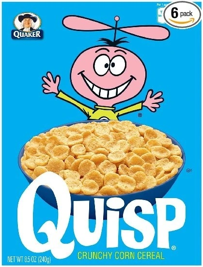
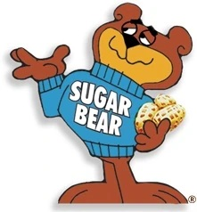
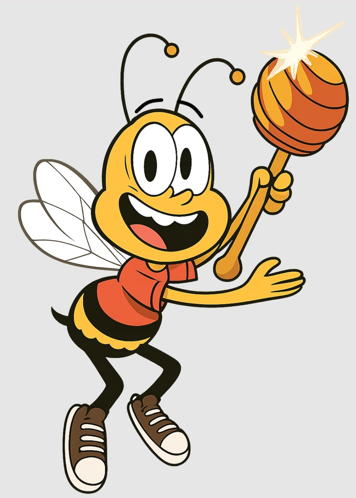
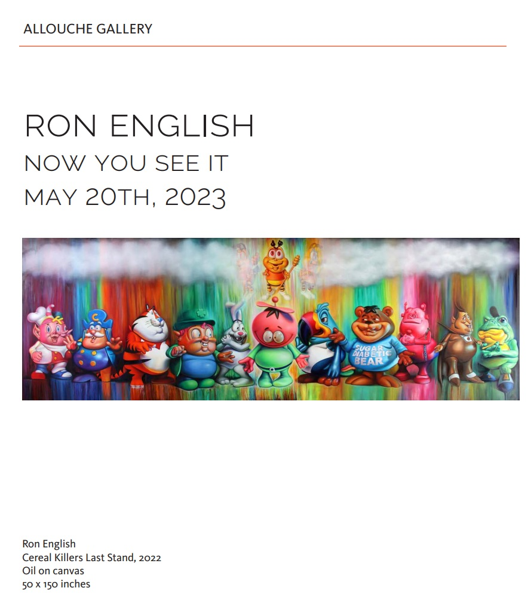
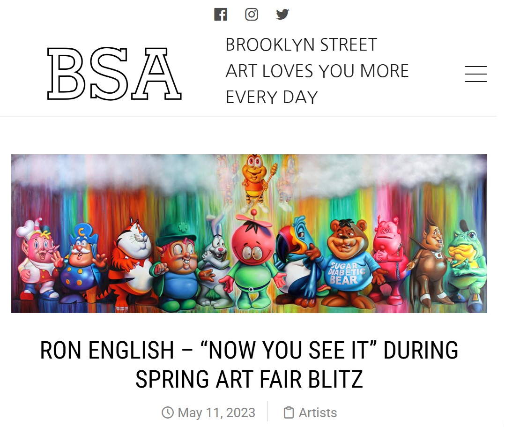

Provenance
Artist's personal collection.
Exhibitions
Now You See It, Allouche Gallery, New York, New York, US, May 20–July 4, 2023.
Literature
Ron English: Now You See It, Allouche Gallery, online exhibition catalogue, 2023.
Notes
This work appears in the online PDF catalogue for Ron English: Now You See It, where it is listed as Cereal Killers Last Stand, 2022, oil on canvas, 50 × 150 inches.
It also appears in Brooklyn Street Art’s coverage of Now You See It at Allouche Gallery.
The composition incorporates cereal-character references, including Snap, Crackle and Pop; Cap’n Crunch; Tony the Tiger; Lucky the Leprechaun; the Trix Rabbit; Quisp; Toucan Sam; Sugar Bear; Dig ’Em Frog; Count Chocula; Franken Berry; and Buzz.
Ancillary Documentation









